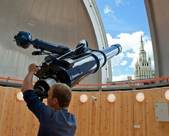

Открытие нового телескопа в обсерватории планетария
15 апреля 2026 г.
Обсерватория планетария пополнилась современным телескопом Celestron EdgeHD 14. Новое оборудование позволит наблюдать объекты дальнего космоса с недоступной ранее детализацией. Первые публичные наблюдения запланированы на майские праздники. Специалисты провели серию калибровочных тестов, которые подтвердили увеличение проницающей способности на две звёздные величины по сравнению с предыдущей моделью. Теперь посетителям станут доступны наблюдения шаровых скоплений и планетарных туманностей даже в условиях городской засветки.